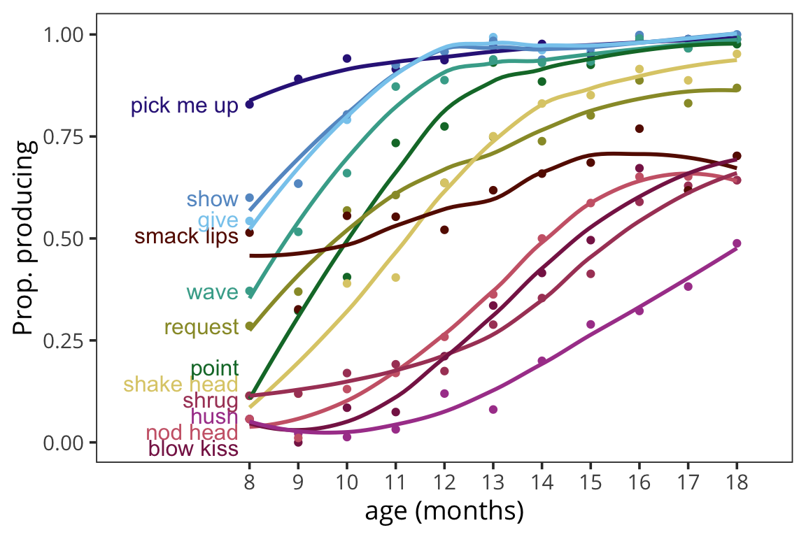
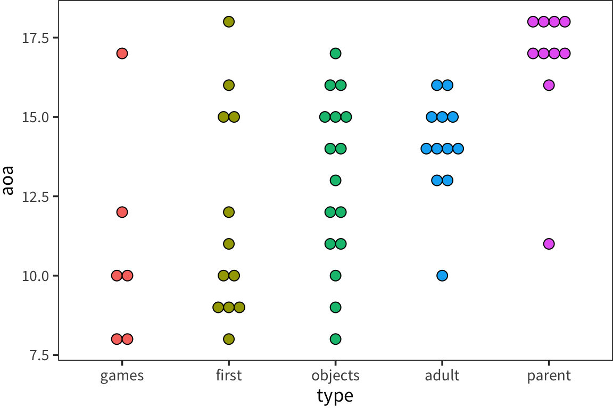

7 Gesture and Communication
Children’s most recognizable early linguistic accomplishments are surely their first words–a topic we turn to in the Chapter 8. However, even before infants approach this important milestone, they are already communicating with their through another modality: gesture. For example, a child who extends their hands and opens and closes their fist likely wants something. A child who points to a bird up in a tree likely wants to get their caregiver’s attention so that they can share in the delight together. Sometimes, children’s early vocalizations are accompanied by gestures, for example, a child might raise both of their hands in the air and says “up!” Indeed, the social and communicative routines that these gestures allow children to establish with their caregivers may form the supportive context in which early language learning happens (Bruner 1985). Gestures thus are an important aspect of children’s communicative development.
Early gestures have long been thought to have a common mental status with later-developing linguistic accomplishments because both may reflect the child’s understanding of symbols, i.e., that a name or gesture can “stand in” for things in the world. The classic theories of Piaget (1962) and Werner and Kaplan (1963) proposed that all symbols have their origins in actions carried out on objects and moreover, such symbols can be manifested in either the vocal or the gestural domain. These proposals suggest a common underlying mental function that is critical to the development of all symbolic skills, both language and in certain types of gestures. In addition, these theories predict a developmental continuity between early gesture use and children’s later lexical and syntactic development (e.g., E. Bates, Camaioni, and Volterra 1975; D. Thal and Bates 1988). For example, children’s ability to point to distant objects is linked to the onset of the production of first words (Fenson et al. 2007), and children with delayed onset of pointing are likely to also be delayed in first word production (ref). In addition, Children’s early gesture use is correlated with their later comprehension abilities (E. Bates, Bretherton, and Snyder 1991), and children’s use of gestures in combinations with words is linked to the later production of multiword combinations (e.g., Goldin-Meadow 1998, Iverson, Capirci, and Caselli (1994)).
These early correlational findings could simply reflect a common cause: Children who use gestures might also be better better at learning words. However, more recent studies have demonstrated specific links between early gesture use and later lexical and syntactic development (Rowe and Goldin-Meadow 2009). For example, the particular lexical items that enter a child’s vocabulary are likely to be names for objects that are labeled using a gesture several months earlier (Iverson and Goldin-Meadow 2005). Moreover, early gesture vocabulary is specifically linked to later word vocabulary, whereas early gesture plus word combinations are linked specifically to children’s later word combination skills (Rowe and Goldin-Meadow 2009). Taken together, the pattern of data suggests that children’s early gestures provide an important social, communicative, and linguistic foundation for later language development.
Early gestures serve many different functions. Children typically first begin to use “deictic gestures,” for example, giving, pointing, or showing (e.g., Volterra and Caselli 1985). Such deictic gestures are clear precursors to important linguistic and communicative functions, including establishing reference and promoting shared attention (Carpenter et al. 1998). However, these deictic gestures do not necessarily have symbolic content per se (i.e., they do not stand for objects in the world, E. Bates et al. 1980). Early on, pointing gestures generally may serve an imperative function, e.g., to request something from an adult, whereas, later, pointing is more likely to direct a caregiver’s attention to another object or person (E. Bates, Camaioni, and Volterra 1975; Masur 1990; Vygotsky 1980). Children might also use gestures as part of a social activity, for example, waving “bye bye” or signaling “all done.”
At first, social gestures might occur simply as imitations, but then later, a child may be able to produce these social gestures spontaneously in certain communicative contexts. Children’s social gestures also reflect children’s ability to engage in certain activities during pretend play, e.g., talking on a pretend phone or pretending to stir a soup. Such social gestures reflect children’s ability to tune into contextual cues, mentally reconstruct activities, and engage in sequences of events. Later, children’s gestures might take on a “true” symbolic meaning, as a child might use a conventional gesture to recognize or classify objects as an instance of a category (e.g., pretend to drink from a cup or sniff a flower). Children’s ability to use gestures in this symbolic way may reflect a common underlying “vocabulary” in both the verbal and gestural domain (e.g., Acredolo and Goodwyn 1985; E. Bates et al. 1980).
This chapter contains analysis of the “early gesture” items from the CDI. Our goals here are to examine (1) the robustnesses of the measurement properties of these non-verbal parent-report measures, (2) the degree of cross-linguistic consistency and variability of reporting milestones like first pointing, as well as social routines like waving hi and playing peekaboo, (3) the relationships between gestural development and linguistic development, and (4) the relationship between gestural development and two demographic variables: sex and socio-economic status.
7.1 Measurement properties of CDI gestures
7.1.1 Measuring the development of gesture
Unlike the word items on the CDI , which typically ask parents to make a binary decision about whether a word is in their child’s vocabulary (although comprehension and production are separate decisions), the First Gestures on CDI forms ask parents to make a 3-way decision, determining if their child produces a given gesture “often”, “sometimes”, or “not yet.” We begin by asking whether parents responses are sensitive to this distinction, as the choice of whether to treat all three levels as meaningful impacts downstream analytic decisions. We perform this sensitiveity analysis on the American English CDI as it is the inventory for which we have the best apriori intuition.
The Figure below shows the proportion of American English learning children who give each of these responses. If each of the three responses is meaninfully different, the developmental trajectory of each should be distinct and predictable. The proportion of children whose parents indicate that they do “not yet” produce each gesture declines predictably over development. However, the other two responses–“sometimes” and “often” do not appear to have reliably different trajectories, and show signs of being used differently by different parents or perhaps in different samples.

For comparision, we collapse the “sometimes” and “often” into a single value, and plot the proportion of children at each age whose parents report that they produce each gesture. The trajectories look generally smooth and prima fascia reasonable, with the potential exception of the “smacklip” gesture for which there is very litte developmental change (this may be an unusual or less stereotyped gesture).

While these gestures are categorized on the CDI as “first gestures,” the form also asks parents about a variety of other kinds of gestures that children produce, including those involved in games and pretend play. Do these gestures have similar trajectories? The Figure below plots developmental trajectries for these other categories of gesture.
While some are clearly learned later than the early gestures, a number of these appear to be learned quite early as well–peekaboo, and pretend play with cups and spoons for instance. They all also appear to have generally smooth and increasing trajectories with the exception of “so big” from the games gestures which, like “smack lips” from the first gestures appears to be either less stereotyped, or more difficult to identify, or more variable across children.

Taken as a whole, it is clear that almost all of the gesture items have developmental trajectories not unlike the words, and that they thus have the potential for informative analyses. Further, trajectories look qualitatively similar across categories. Consequently, for general cross-linguistic analyses, we will consider all of the gestures together, and compress “often” and “sometimes” into a single affirmative choice.
To estimate the coherence of these categories, we compute Age of Acquisition estimates for each of the American English gestures by gesture type: First Gestures (e.g. “pick me up”, “point”), Game Gestures (e.g. “play peekaboo”, “chase”), Object Gestures (e.g. “brush teeth”, “push car”), Adult gestures (e.g. “type”, “use pen”), and Parent Gestures (e.g. “sweep”, “feed from a spoon”). These estimates were produced by fitting a robust linear regression to the proportion of kids who produce each gesture and estimating the age at which 50% of children produce the given gesture. The categories vary in coherence, but overall first gestures and games tend to be produced early, and Adult and Parent gestures–more representative of pretend play–are produced relatively late. The object gestures vary significantly in their ages of acquisition.

7.1.2 Consistency of the First Gestures
While the “First Gestures” are not universally learned before the other gestures measured, they are among the earliest learned. Because of the particular theoretical importance of these early communicative gestures (i.e. deictics like pointing and showing, showing routines like “pick me up”), we analyze the cross-linguistic consistency of these at the item level.
| Unilemma | mean | sd | n |
|---|---|---|---|
| pick me up | 8.000000 | 1.732051 | 7 |
| give | 8.857143 | 1.463850 | 7 |
| show | 8.888889 | 1.166667 | 9 |
| point | 9.125000 | 2.167124 | 8 |
| request | 9.750000 | 4.166190 | 8 |
| shake head | 9.875000 | 1.885092 | 8 |
| wave | 9.875000 | 1.885092 | 8 |
| smack lips | 10.857143 | 3.891382 | 7 |
| nod head | 14.500000 | 3.779645 | 8 |
| hush | 15.166667 | 2.994439 | 7 |
| shrug | 15.714286 | 3.817254 | 7 |
| blow kiss | 16.000000 | 1.897367 | 6 |

The figure below shows both consistency and variability across items. As in the learning of words, the means and variances of these ages of acquisition were correlated (r = 0.4563055; Mollica and Piantadosi (2017)). The primary outliers were “request”, which appears to be produced surprisingly late in American English, and “shrug” which was produced surprisingly late by French-learning infants. In general, however, most of the cross-linguistic differences appear to be consistent across the gestures (i.e. French-learning infants gestures later). It is difficult to tell from this small sample of mostly European languages whether these differences are driven by linguistic factors or rather by properties of our samples or variability in parents’ interpretation of the form. Nonetheless, we think they provide some evidence for consistency in the process of gestural development cross-linguistically. To get additional leverage on this process, we next consider the full set of gestures.
7.1.3 Intercorrelation among gestures
Given both the similarity and the variability in the developmental trajectories of different gestures, as well as the cross-linguistic variability in first gestures, and a natural next is to quantify the relationship of gestures to each-other. We begin by computing the average intercorrelation between each of these gesture categories. In this analysis, we take gestures in pairs (e.g. “adult gestures” and “first gestures”) and ask how the proportion of items that kids know in one predict the proportion of items they know in the other. For American English learning children, the proportion of gestures they know across categories is correlated at p = 0.6000678–nearly identical to the value of ~6 reported by Fenson et al. (1994). For comparison, the same intercorrelation computed across categories of words (e.g. “animals” and “places”) yield 0.643456 for production and 0.5657221 for comprehension.
This cross-category intercorrelation is quite similar cross-linguistically, ranging from 0.5604794 in French (French) to 0.8391165 in Korean. The full table of intercorrelations can be found below.
| language | mean | sd |
|---|---|---|
| English (American) | 0.600 | 0.113 |
| French (French) | 0.560 | 0.178 |
| Hebrew | 0.605 | 0.141 |
| Italian | 0.682 | 0.104 |
| Korean | 0.839 | 0.129 |
| Norwegian | 0.572 | 0.110 |
| Slovak | 0.687 | 0.080 |
| Spanish (Mexican) | 0.668 | 0.087 |
7.2 The relationship between language and gesture
A critical theoretical question in early communicative development concerns the relationship between language and gesture. As alluded to above, a number of early influential theories (e.g., Piaget 1962, Werner and Kaplan (1963)) held that gesture and language should be intimately related becuase of their reliance on a shared system of symbolic reasoning. To the extent that they are underpinned by the same system, words and gestures should have related developmental trajectories–children who gesture early should also speak early and vice versa (E. Bates, Bretherton, and Snyder 1991). Following in the footsteps of Fenson et al. (2007), we ask this question at larger scale, and cross-linguistically. To assess this relationship, we will look at the correlations between children’s gestural and linguistic vocabularies.
To first provide a baseline, however, we compute the correlation between children’s language and gesture development and their age. As the table below shows, gesture shows as mnuch or more development than comprehhension and production over the ages measured by the CDI Words and Gestures forms, and the variability in the correlation with age in all three measures hangs together within-language: Languages where there is more developmental change in linguistic developmnet also tend to have more gestural development.
| language | gesture | comprehension | production |
|---|---|---|---|
| English (American) | 0.734 | 0.604 | 0.458 |
| French (French) | 0.564 | 0.312 | 0.295 |
| Hebrew | 0.661 | 0.668 | 0.650 |
| Italian | 0.815 | 0.759 | 0.611 |
| Korean | 0.542 | 0.608 | 0.437 |
| Norwegian | 0.705 | 0.721 | 0.545 |
| Slovak | 0.661 | 0.659 | 0.496 |
| Spanish (Mexican) | 0.707 | 0.552 | 0.356 |
However, as we noted in Chapter 4, comprehension and production do not proceed in lock-step and comprehension generally outpaces production. This is, in part, because production requires additional control over the developming motor systems necessary for speech. To the extent that gesture and language are related by their shared reliance on symbolic understanding, their correlation should be highest when only this shared system is tapped. In this case, we should predict that gesture production and language comprehension are more tightly correlated than gesture production and language production. In contrast, if the correlation is due primarily to a shared desire to communicate and engage socially with caregivers, we should predict a stronger correlation between gesture production and language production. Across these 8 language, children’s production of gestures is consistently more highly correlated with their comprehension (Table below).
| language | comprehension | production |
|---|---|---|
| English (American) | 0.750 | 0.525 |
| French (French) | 0.672 | 0.373 |
| Hebrew | 0.783 | 0.652 |
| Italian | 0.812 | 0.495 |
| Korean | 0.506 | 0.446 |
| Norwegian | 0.685 | 0.500 |
| Slovak | 0.627 | 0.536 |
| Spanish (Mexican) | 0.764 | 0.551 |
7.3 Gesture and Demographic Variables
Type and sex. Small female advantage overall, but big interaction in gestures_parent 
| term | estimate | std.error | statistic |
|---|---|---|---|
| (Intercept) | 0.082 | 0.039 | 2.091 |
| age | 0.044 | 0.001 | 40.471 |
| sexMale | -0.009 | 0.021 | -0.442 |
| typegestures_games | 0.154 | 0.017 | 8.960 |
| typegestures_objects | -0.432 | 0.017 | -26.065 |
| typegestures_parent | -0.622 | 0.017 | -37.218 |
| typegestures_adult | -0.551 | 0.017 | -33.126 |
| age:sexMale | -0.002 | 0.001 | -1.566 |
| age:typegestures_games | -0.007 | 0.001 | -6.002 |
| age:typegestures_objects | 0.020 | 0.001 | 17.512 |
| age:typegestures_parent | 0.019 | 0.001 | 15.771 |
| age:typegestures_adult | 0.019 | 0.001 | 16.099 |
| sexMale:typegestures_games | -0.038 | 0.024 | -1.583 |
| sexMale:typegestures_objects | 0.095 | 0.023 | 4.146 |
| sexMale:typegestures_parent | 0.232 | 0.023 | 9.990 |
| sexMale:typegestures_adult | 0.001 | 0.023 | 0.060 |
| age:sexMale:typegestures_games | 0.003 | 0.002 | 1.877 |
| age:sexMale:typegestures_objects | -0.006 | 0.002 | -3.763 |
| age:sexMale:typegestures_parent | -0.024 | 0.002 | -14.961 |
| age:sexMale:typegestures_adult | 0.006 | 0.002 | 3.573 |
Type and ses. Very small low-ses advantage?

| term | estimate | std.error | statistic |
|---|---|---|---|
| (Intercept) | -0.497 | 0.051 | -9.815 |
| age | 0.064 | 0.001 | 60.905 |
| typegestures_first | 0.585 | 0.015 | 39.422 |
| typegestures_games | 0.739 | 0.015 | 49.775 |
| typegestures_objects | 0.129 | 0.015 | 8.675 |
| typegestures_parent | 0.027 | 0.015 | 1.772 |
| seslow | -0.020 | 0.020 | -1.009 |
| age:typegestures_first | -0.026 | 0.001 | -25.811 |
| age:typegestures_games | -0.030 | 0.001 | -29.704 |
| age:typegestures_objects | -0.005 | 0.001 | -5.447 |
| age:typegestures_parent | -0.017 | 0.001 | -17.061 |
| typegestures_first:seslow | 0.068 | 0.007 | 9.924 |
| typegestures_games:seslow | -0.054 | 0.007 | -7.833 |
| typegestures_objects:seslow | 0.069 | 0.007 | 10.072 |
| typegestures_parent:seslow | 0.095 | 0.007 | 13.751 |
| age:seslow | 0.001 | 0.001 | 0.396 |